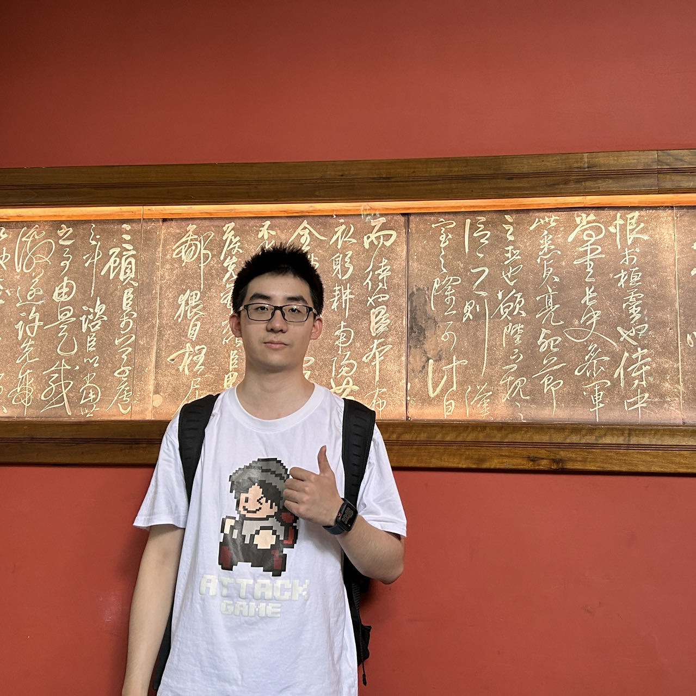

|
Changlong Jiang 姜昌龙 I am a master’s student at the Department of Artificial Intelligence and Automation, Huazhong University of Science and Technology (HUST), advised by Prof. Yang Xiao. Before that, I received my bachelor's degree from HUST in 2022. I was born in Tai'an, Shandong, a beautiful historical and cultural city at the foot of Mount Tai. My research interests include computer vision and pattern recognition. My current research direction is mainly in human body analysis, including human pose estimation and hand pose estimation. |
 |
{kind=link}
Publications |

|
Anchor-to-Joint Transformer Network for 3D Interacting Hand Pose Estimation from a Single RGB Image
Changlong Jiang, Yang Xiao#, Cunlin Wu, Mingyang Zhang, Jinghong Zheng, Zhiguo Cao, Joey Tianyi Zhou (#: corresponding author) IEEE/CVF Conference on Computer Vision and Pattern Recognition (CVPR), 2023 code & project page / paper / video / poster |
{kind=link}
Competitions |
|
|
6th International Workshop on Observing and Understanding Hands in Action (HANDS), ECCV 2022
Challenge: Semi/Self-supervised Two-hands 3D Pose Estimation. Result: Obtain 1rd place and first prize. |
|
|
The "Challenge Cup" National Competition, 2023
Topic: Driver Monitoring System (DMS). Result: Winning the Grand Prize (top prize beyond First Prize). |
|
|
The Mathematical Contest In Modeling (MCM), America, 2020
Topic: Comprehensive exploration of buyer reviews and ratings for Amazon e-commerce products. Result: Obtain Meritorious Winner (9%). |
Selected Honors & Scholarships
|
|
This website is inspired by Jon Barron's website and Wenzheng Zeng's website . Many thanks to them! |